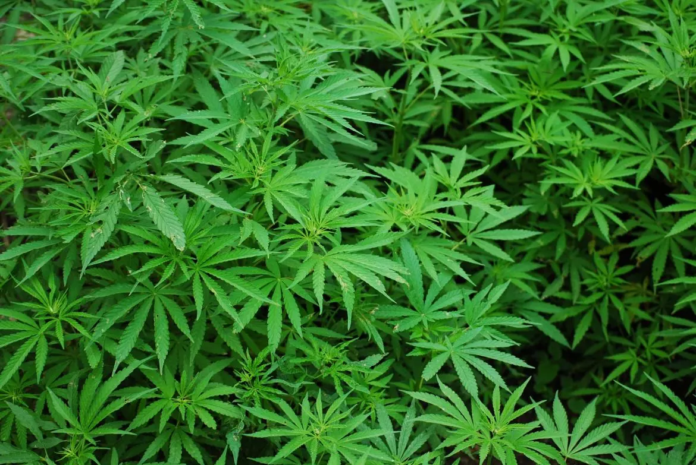
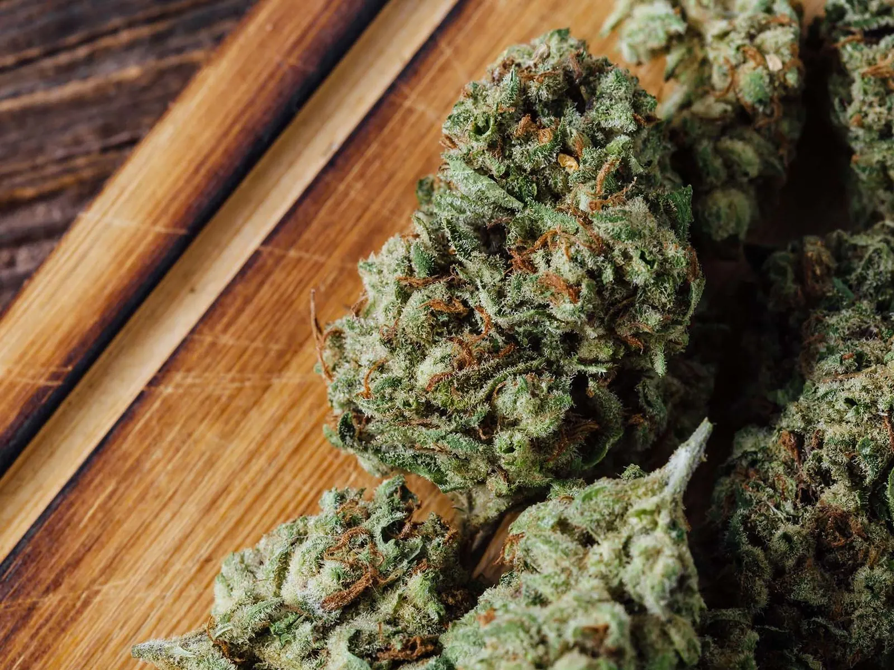

Local guides · 6 min read
Dispensary Guide for Westchester County
Legal cannabis exists in Westchester County, and it is concentrated in a handful of places. Adults 21 and over can buy from any licensed New York dispensary, and in this county that means a short list of stores clustered in the southern cities, plus licensed delivery that reaches most of the towns in between.
The reason goes back to a decision every municipality in the state had to make in 2021. Under the Marijuana Regulation and Taxation Act, each city, town, and village could pass a local law refusing to host adult-use retail dispensaries. The deadline was December 31, 2021. Well over twenty Westchester municipalities said no. The four largest cities in the south of the county said yes.
This guide covers who allowed what, what that decision changed for you as a shopper, and how to buy legally if the town you live in opted out.
What to know up front

- Westchester municipalities had until December 31, 2021 to pass a local law opting out of retail dispensaries, and after that date the option closed permanently, per the NYS Office of Cannabis Management.
- Yonkers, Mount Vernon, New Rochelle, and White Plains all allowed adult-use retail. More than twenty smaller Westchester towns and villages opted out, a list that includes Bronxville, Eastchester, Tuckahoe, Ardsley, Irvington, Larchmont, Pelham Manor, Port Chester, and Rye.
- An opt-out blocked storefronts inside the town line. It did not change the fact that possession and use by adults 21 and over is legal statewide.
- A town that opted out can repeal that local law and allow dispensaries at any time. Once it repeals, it cannot opt back out.
- Toke‘s Westchester store is at 471 McLean Ave in Yonkers, open 10:00 AM to 10:30 PM Sunday through Thursday and 10:00 AM to 11:00 PM Friday and Saturday, phone 914-207-1545, licensed by OCM under OCM-RETL-25-000418.
Which Westchester towns allowed dispensaries and which opted out

The split runs along a rough north-south line. The southern cities, Yonkers, Mount Vernon, New Rochelle, and White Plains, all allowed adult-use dispensaries and on-site consumption. So did a few smaller places, including Pound Ridge and Sleepy Hollow.
The opt-out list is longer and it covers a lot of the towns people actually live in. Bronxville, Eastchester, Tuckahoe, Ardsley, Irvington, Larchmont, Pelham Manor, Pleasantville, Port Chester, Rye, Rye Brook, Elmsford, Mount Kisco, Mount Pleasant, and Yorktown all filed local laws before the deadline, along with several others.
OCM publishes the official opt-out file and updates it as municipalities repeal, so the current list is the one on the state site rather than any list you read in a news story from 2021.
What an opt-out actually changed for you

An opt-out is a decision about what can open inside a municipality’s borders. It stopped a retail dispensary from setting up shop in that town. Nothing about it made cannabis illegal to possess or use there.
Live in Bronxville or Eastchester and you are in the same legal position as someone in Yonkers when it comes to buying and carrying. You just have to go somewhere else to buy, or have it brought to you. The OCM fact sheet for local governments also spells out that a municipality can repeal its prohibition whenever it wants, which is why a few towns across the state have reversed course since 2022.
Where are the licensed dispensaries in Westchester County

They are in the south, mostly. Yonkers has the densest cluster, which makes sense given it is the largest city in the county and it allowed retail from the start. Mount Vernon, New Rochelle, and White Plains all permit dispensaries, though how many are actually open at any given moment depends on where OCM is in its licensing queue.
A town allowing dispensaries is not the same as a town having one open today. Before you drive anywhere, run the address through the OCM dispensary verification tool, which lists every licensed adult-use retailer in the state. North of the Cross County Parkway, licensed storefront options thin out fast, and delivery becomes the practical answer.
How do you tell a licensed dispensary from a smoke shop

Licensed stores card you at the door every time, no exceptions, and they only sell products carrying the New York universal symbol and a batch number tied to lab testing. They also post a QR code in the storefront that links back to the state’s licensed retailer list.
Unlicensed shops sell products that never went through New York’s testing requirements. Price is usually the tell. If an eighth is priced well under what licensed stores charge, the tax is not being paid and the testing probably was not done either. We wrote a longer breakdown in dispensary vs smoke shop.
Where Toke fits in Westchester

Toke’s Westchester location is on McLean Avenue in south Yonkers, a few blocks off the Bronx line and close to Van Cortlandt Park. It is open 10:00 AM to 10:30 PM Sunday through Thursday and 10:00 AM to 11:00 PM Friday and Saturday. Parking is street parking on McLean and the side streets, and there is no dedicated lot, so give yourself a minute in the evening.
Two towns get their own breakdown because they carry the most search. Coming from the county seat, read the White Plains closest options guide. Coming from the Mount Vernon side, the Mount Vernon guide covers transit as well as driving, since plenty of Mount Vernon shoppers do not drive.
For the store itself, what the room is like, and how the menu is organized, the Yonkers dispensary guide goes deeper. You can also just open the Yonkers menu and see what is in stock.
Does Toke deliver to towns that opted out

Yes. Delivery reaches most of southern and central Westchester from the Yonkers store, including towns with no dispensary of their own. There are pages for Bronxville and Scarsdale among about three dozen Westchester municipalities.
Orders go out with a real ETA and a text from the driver. You have to be there to accept it with a valid government photo ID, and payment is cash or debit at the door, because no New York dispensary can take credit cards under federal banking rules. Some drivers carry PIN debit terminals. The minimum is $75. Delivery is free on orders of $75 or more. For zones, timing, and ordering steps, see weed delivery in Yonkers and Westchester.
How much can you buy in one day in New York

Three ounces of flower or 24 grams of concentrate. That is the adult-use daily purchase limit statewide, and it applies at every licensed dispensary in Westchester. For the rest of the rules, including where you can legally smoke, read New York cannabis laws explained.
Frequently asked questions

Which towns in Westchester have dispensaries? Yonkers, Mount Vernon, New Rochelle, and White Plains all allowed adult-use retail dispensaries, and the licensed stores in the county are concentrated in those cities. Most of the smaller towns and villages opted out before the December 31, 2021 deadline, so they cannot host a dispensary unless they repeal that law.
Why does my town not have a dispensary? It probably opted out. Under the MRTA, any New York city, town, or village could pass a local law refusing to host retail dispensaries, and more than twenty Westchester municipalities did exactly that before the end of 2021.
Can I still buy cannabis if my town opted out? Yes. An opt-out only stops a store from opening inside that town. Adults 21 and over can buy at any licensed dispensary in the state and can have it delivered by a licensed retailer, and possession stayed legal statewide regardless of the local vote.
How do I check that a dispensary is actually licensed? Use the OCM dispensary verification tool on cannabis.ny.gov, or scan the QR code posted in the storefront. Every licensed New York retailer appears on that list with its license number.
How far is the Yonkers Toke store from central Westchester? From White Plains it is roughly ten miles south, about 20 minutes without traffic. From Mount Vernon it is a short run west across the county on the Cross County Parkway.
Where to shop from here
If you are in southern Westchester and want to walk into a store, Toke is at 471 McLean Ave, Yonkers, NY, open 10:00 AM to 10:30 PM Sunday through Thursday and 10:00 AM to 11:00 PM Friday and Saturday, 914-207-1545. Bring a valid government photo ID, plus cash or a debit card.
Further north, or in a town that opted out, order for delivery instead. Delivery runs from the Yonkers store with a $75 minimum, and you have to be there to take the handoff yourself. Delivery is free on orders of $75 or more. On the Rockland side, the Spring Valley store at 2 S Central Ave covers that county, 845-406-3004, open daily from 10:00 AM to 11:00 PM.
Keep reading
More from the blog
Cannabis and Fitness: What to Know Before You Try It
Once considered total opposites, cannabis and fitness are starting to overlap in a big way. From runners who swear by a pre-jog puff to yogis using…

What “Lab-Tested Cannabis” Actually Means, and Why It Matters
If you hang around Toke Cannabis long enough, you’ll hear this question at least once a day:

Microdosing Cannabis: How Less Can Actually Be More
For a long time, cannabis culture has been defined by one question: “How strong is it?” But a quieter, more thoughtful movement is gaining traction…
Two stores · open 7 days
Order tonight, pick it up in minutes
Order online for in-store pickup, curbside pickup, or delivery across Westchester and Rockland. Free delivery on orders of $75 or more.